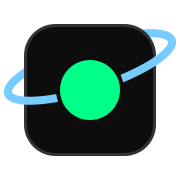
gonogoMission control for Kerbal Space Program.
Get rich telemetry from the API, or use the mission control app that supports multiplayer-focused station screens. Expansive mod support provided through the Uplink framework.
By default, Gonogo implements an optional signal delay system. All telemetry is modelled as travelling at light speed through the relay network.
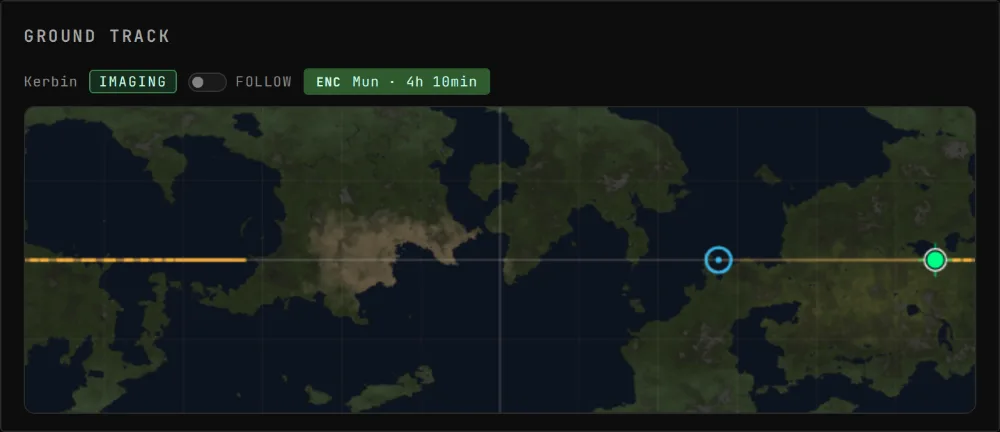
Set it up
-
1Install the Gonogo mod in KSP
Search for Gonogo in CKAN, or download and install manually from the GitHub Releases page (setup guide).
Optionally, install Uplinks. Uplinks are mods in their own right. They extend Gonogo, typically to support other mods. In CKAN you can discover them by searching "dep:GonogoCore".
dep:GonogoCore -
2Start Gonogo on your computer
Use Docker or another container runtime, like Podman. It's easiest to do this on a different computer to the one running KSP. If you're using the same computer, ensure KSP's background simulation setting is on.
In a terminal, run:
docker run -d --name gonogo --restart unless-stopped --pull always \ --add-host=host.docker.internal:host-gateway \ -e KSP_HOST=host.docker.internal \ -p 8080:8080 -p 127.0.0.1:3002:3002 \ -p 47100:47100/udp -p 47100:47100/tcp \ ghcr.io/ksp-gonogo/gonogo:latest- Name
gonogoalready in use? Rundocker rm -f gonogo, then the command again. - PowerShell: end each line with
`in place of\, or type it as one line. - If playing with friends on the Internet, see the networking guide.
- Name
-
3Open the app and follow the setup
Start KSP, then open http://localhost:8080 on the computer Gonogo is running on.
- Keep the Gonogo tab open. Other screens get their data through it.
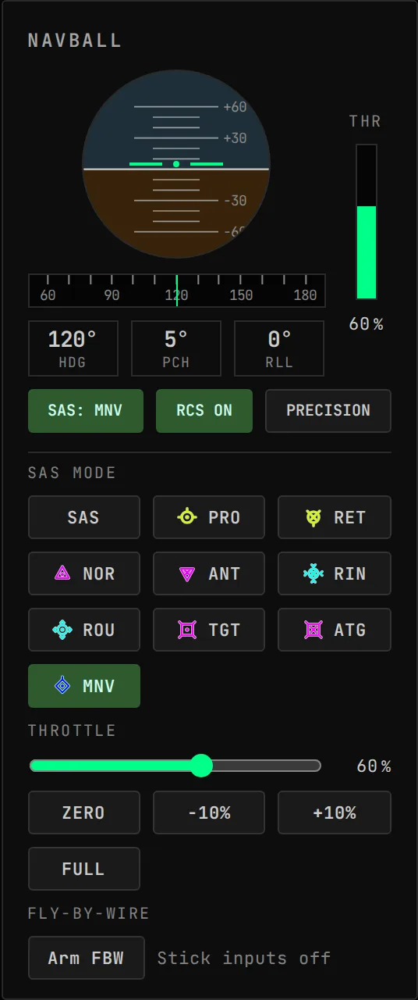
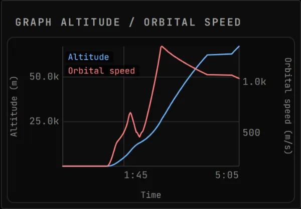
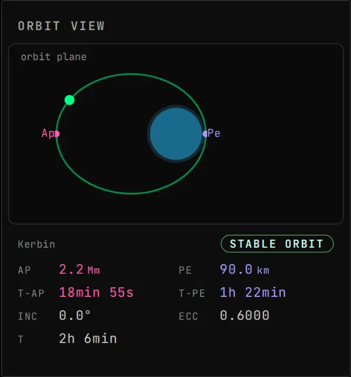
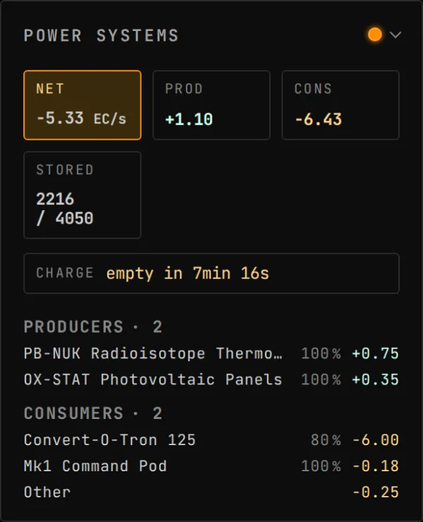
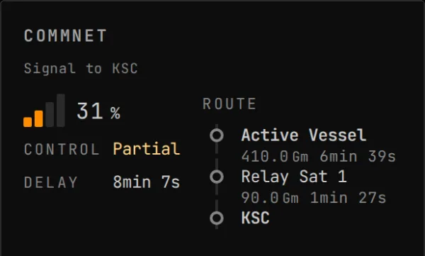
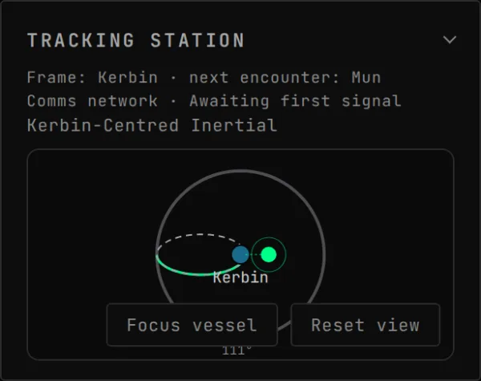
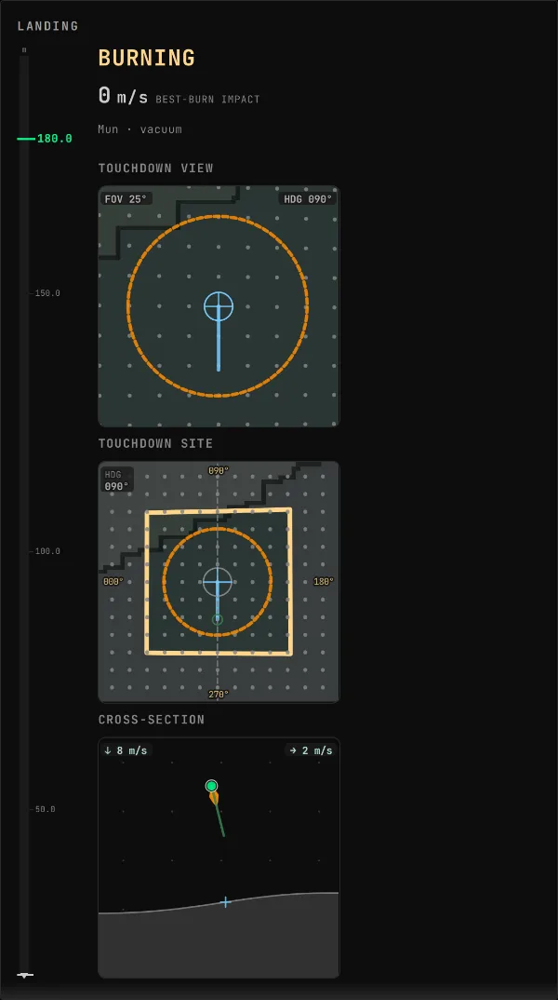
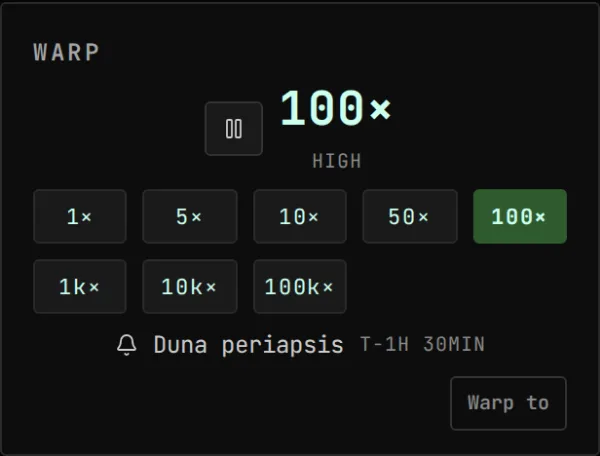
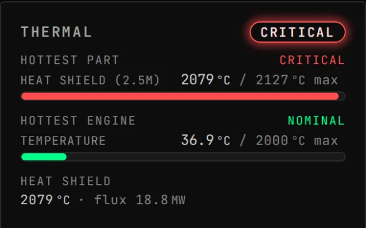
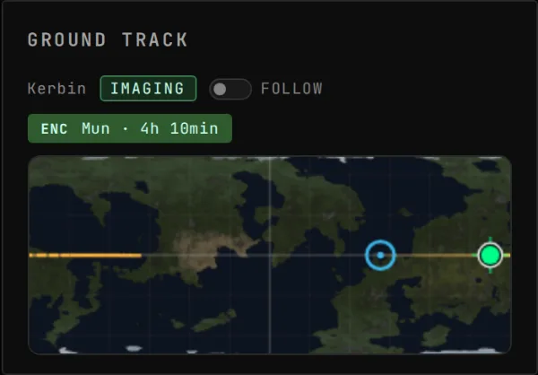
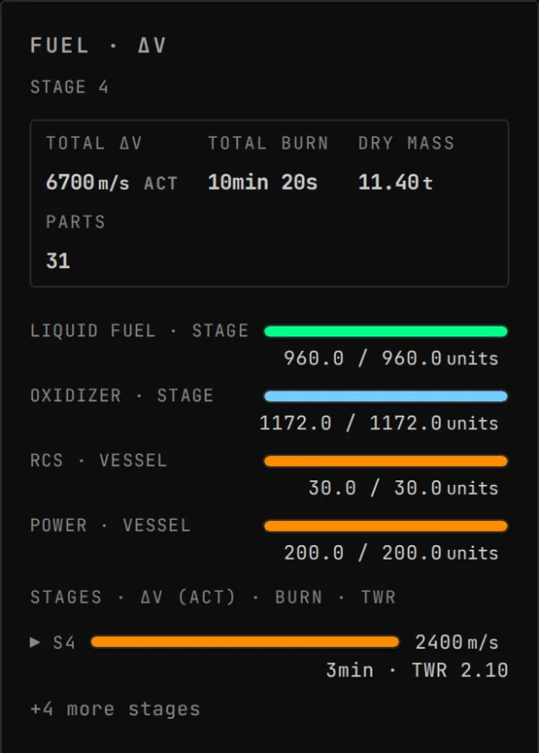
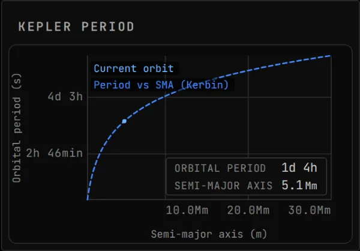
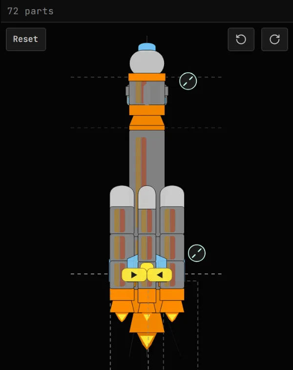
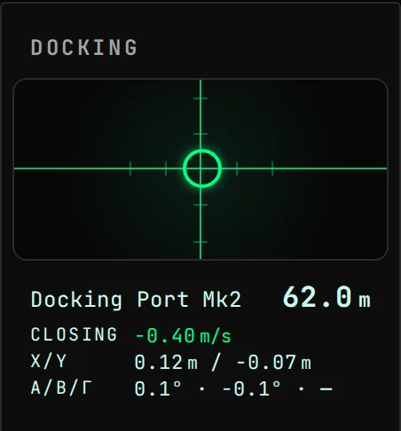
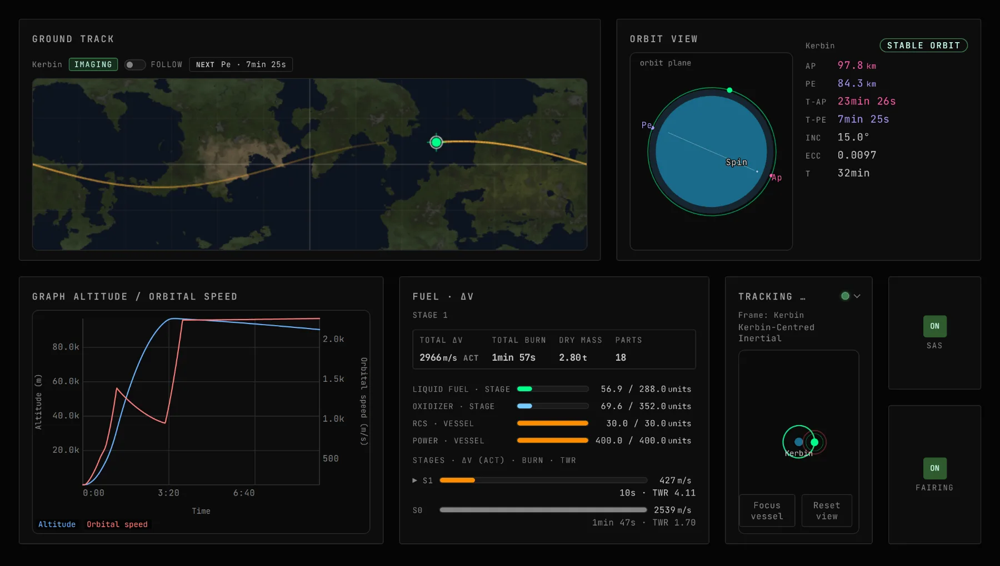